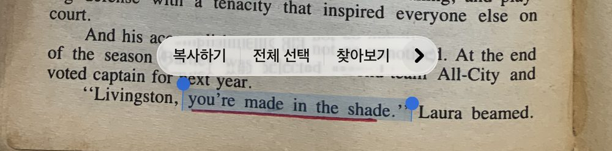
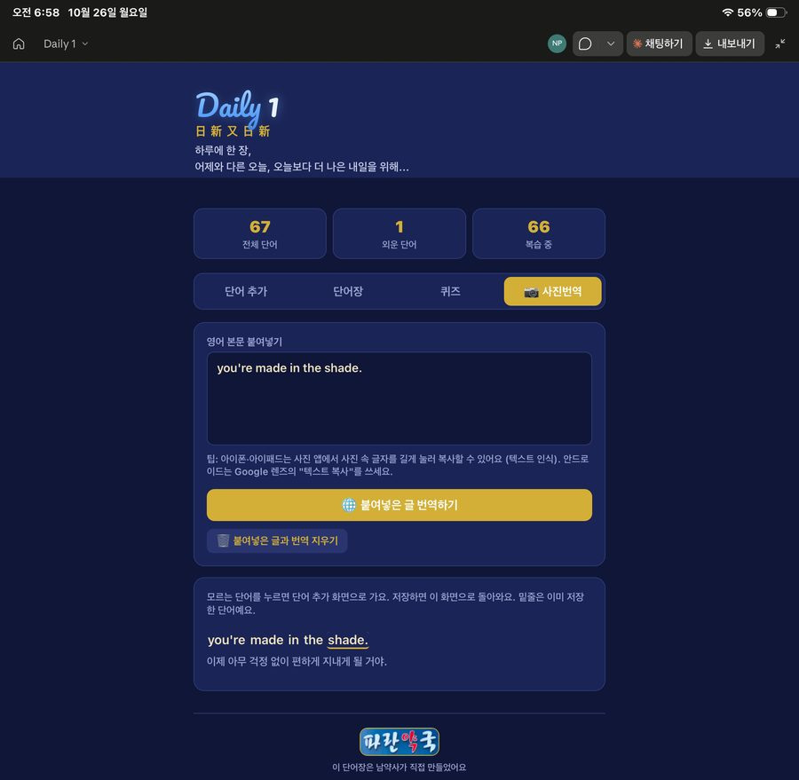
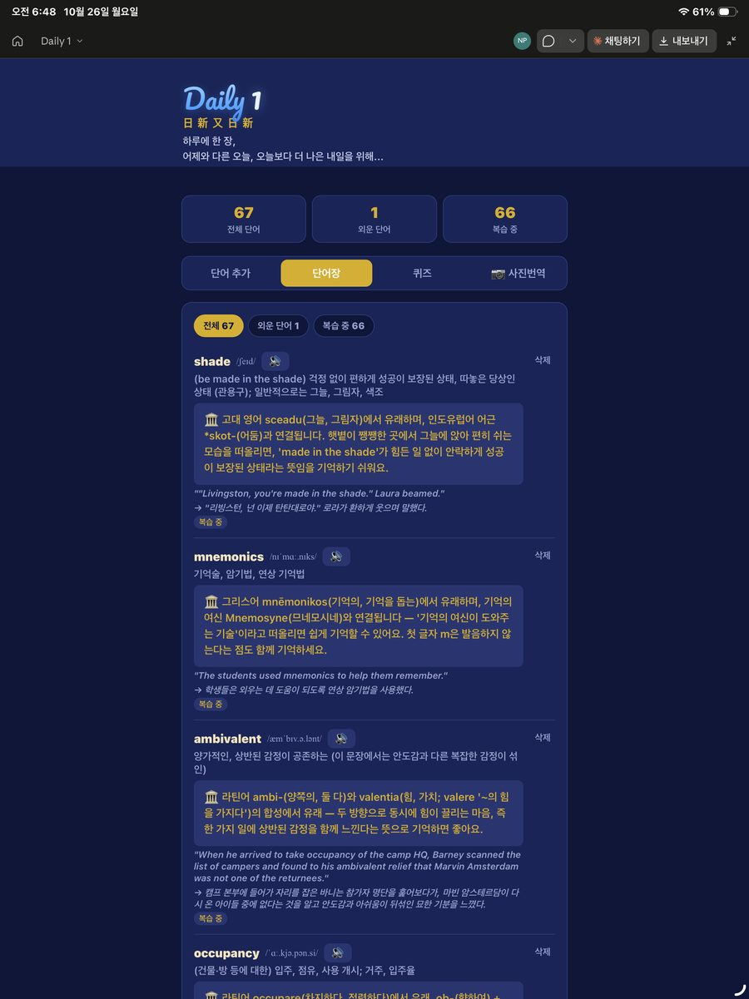
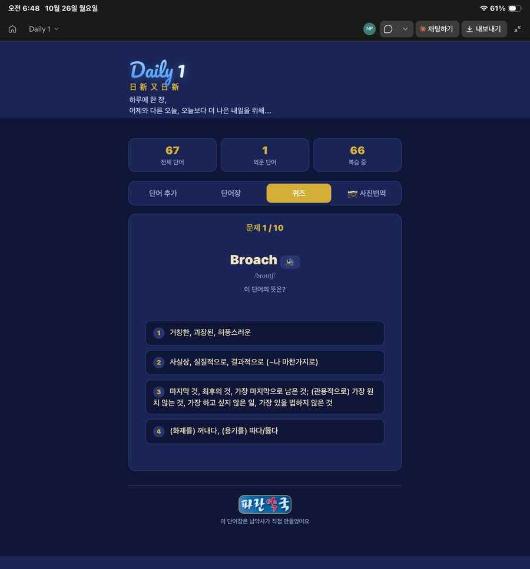
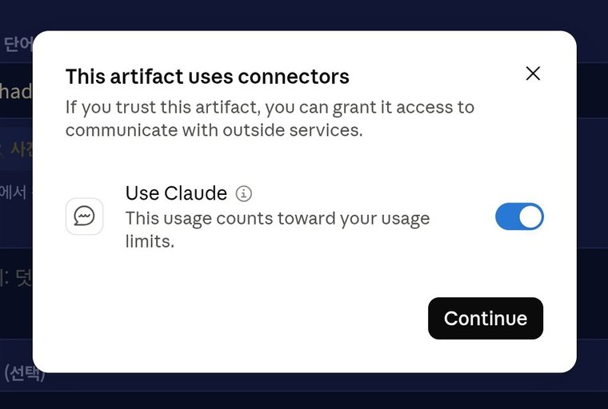
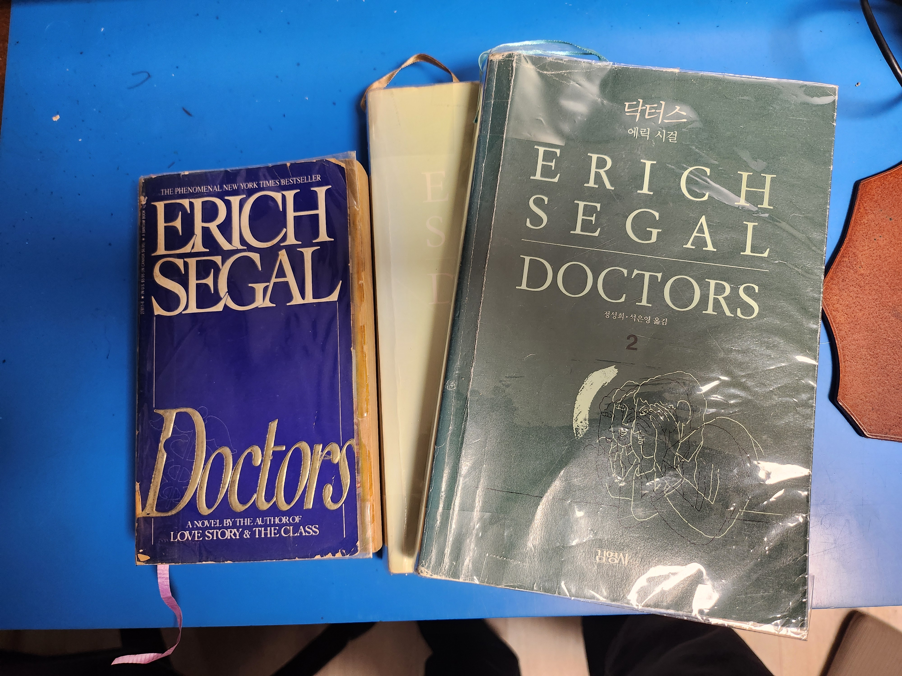

📖 영어 원서 단어장 앱 (무료) - 남약사가 직접 Claude로 만들었어요
원서를 읽다가 페이지를 사진으로 찍어서 모르는 영어 단어를 바로 찾고, 사전·발음·어원·예문 해석까지 자동으로 채워주고, 퀴즈로 복습하는 단어장이에요. 특히 Claude로 문맥에 맞게 라틴어 어원, 슬랭까지 활용해 암기를 도와줘요. 본인의 Claude 계정만 있으면 무료로 쓸 수 있습니다. (별도 앱 설치, 가입비, 서버 필요 없음)
📱 이렇게 써요




📌 준비물
- Claude 계정 (claude.ai, 무료 요금제 가능)
- 위 링크의 HTML 파일
🛠 설치 방법 (3분)
- 위 링크에서 HTML 파일을 (단지 주소가 아니라) 내 기기에 저장해요.
- claude.ai 또는 Claude 앱에서 새 대화를 열고, 저장한 HTML 파일을 첨부해요.
- 아래 문장을 그대로 복사해서 보내요:
💡 클로드에게 보낼 문장 — 오른쪽 위 [복사] 버튼을 누르세요
"첨부한 HTML을 수정하지 말고 그대로 아티팩트로 게시해줘. 사용자별 저장(db), 사용자 식별(user), Claude 호출(sample) 기능을 켜서 게시해줘." - 게시가 끝나면 나오는 카드를 눌러 열어요. ("This artifact uses connectors" (Use Claude) 창이 뜨면 그대로 두고 [Continue]만 누르면 돼요)
- 자주 쓰려면 Safari(아이폰/아이패드)나 Chrome에서 열어서 공유 버튼 → "홈 화면에 추가"로 바탕화면에 아이콘을 만들어 두세요.
💡 주요 기능 설명
- 단어 추가: 영어 단어를 입력하면 뜻, 발음, 라틴어/그리스어 어원, 예문이 자동으로 채워집니다. 발음 듣기 버튼으로 반복해서 들을 수 있어요.
- 사진 번역: 원서 한 페이지의 글자를 복사해서 붙여넣으면 문장별로 한국어 번역이 나와요. 모르는 단어를 누르면 단어 추가 화면으로 바로 이동해요. (아이폰/아이패드: 사진 앱에서 글자를 길게 눌러 복사)
- 퀴즈: 같은 단어를 3번 연속 맞히면 "외운 단어"가 돼요. 위쪽 숫자 카드를 누르면 외운 단어, 복습 중인 단어를 따로 볼 수 있어요.
❓ 자주 묻는 질문 (FAQ)
Q. 정말 무료인가요?
A. 앱 자체는 무료예요. 다만 자동 뜻 찾기, 번역, 어원 기능은 내 Claude 사용량으로 돼요. 무료 요금제는 사용량 한도가 있어서, 한도에 걸리면 잠시 뒤에 다시 써야 할 수 있어요.
Q. 다른 사람과 단어가 섞이나요?
A. 아니요. 내 단어는 내 계정에만 저장되고, 내 기기들(폰, 태블릿, 컴퓨터)에서는 동기화돼요.
Q. 파일을 그냥 열었더니 자동 기능이 안 돼요.
A. HTML 파일을 직접 열면 Claude 기능이 없어요. 꼭 위 설치 방법 ②~④처럼 Claude에서 아티팩트로 게시한 뒤 열어야 해요.
Q. 자동 뜻 찾기가 안 돼요.
A. Claude에게 이렇게 말해보세요: "db, sample, user 기능을 켜서 다시 게시해줘."
Q. "This artifact uses connectors" 창이 떠요.
A. 정상이에요. "Use Claude" 스위치는 켜진 그대로 두고 [Continue]만 누르면 돼요. 이 창은 뜻 찾기·번역에 Claude를 쓰겠다는 동의 창이고, 처음 한 번만 나와요.

Q. 앱이 업데이트되면요?
A. 이쯤이면 완벽하지 않을까 생각하는데 건의사항 알려주시면 제가 업데이트 파일 올리겠습니다.

— 남약사 (파란약국)